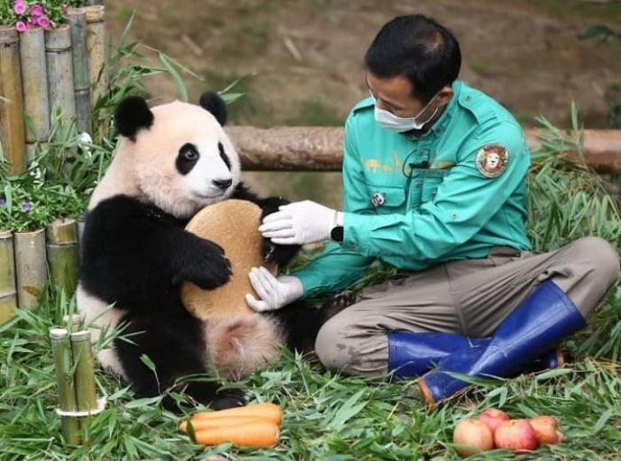
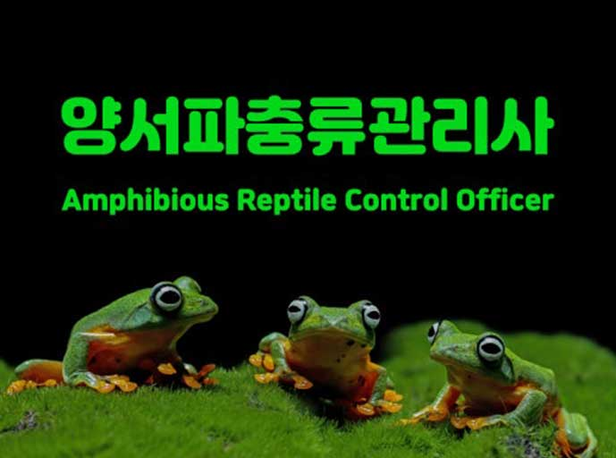
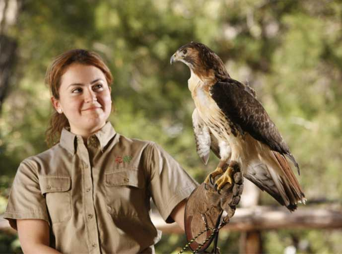
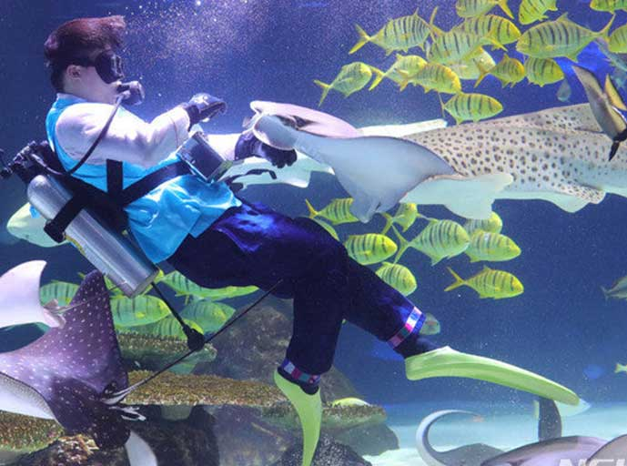
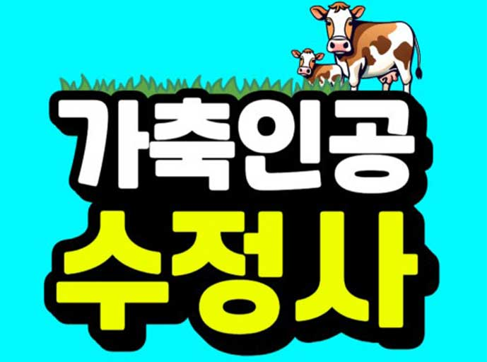
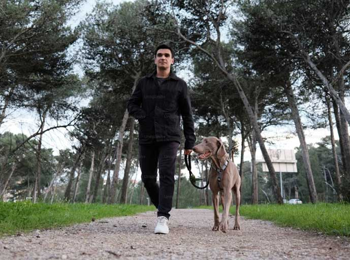
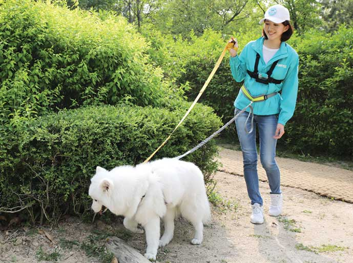
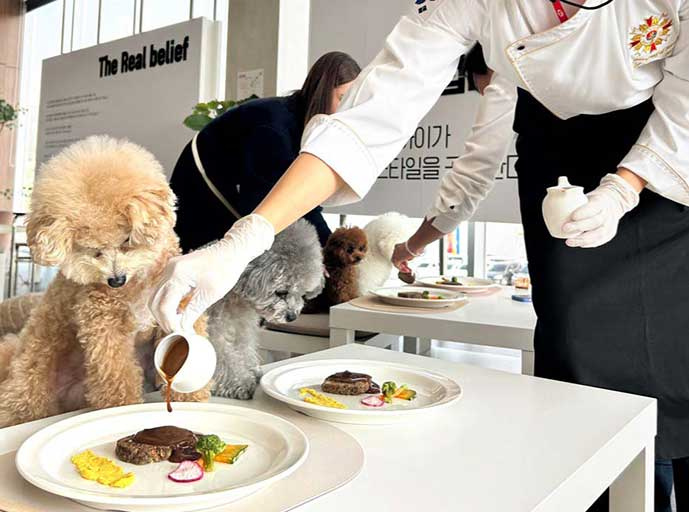

-
동물 사육
동물원사육사
(Zookeeper)동물원사육사는 동물을 보살피고 기르는 직업을 말한다. 즉, 사육을 전문으로 하는 직업이다. 동물원하면 떠오르는 직업 중 하나이다. 물론 동물농장에서 일하면서 가축이나 승마용 말 같은 산업용 동물을 맡는 직종이나 애견 훈련소 같은 곳에서 일하는 종사자도 사육사로 부른다.
-
동물 사육
양서파충류관리사
(Amphibious Worms Manager)양서파충류관리사는 양서 파충류를 체계적이고 효율적으로 관리하기 위한 이론 및 실무 능력을 검증하는 민간자격증이다. 환경부가 관리하고 한국양서파충류협회에서 자격증을 발급한다. 시험은 양서류 파충류 전시 기획, 표본을 포함한 전시물의 제작, 번식을 위한 이론 및 설비 제작 등과 사육 환경의 조성, 식단 조절 등을 할 수 있는 능력을 평가한다.
-
동물 사육
특수동물관리사
(Special Animal Caregiver)특수동물관리사는 단순한 동물 보호의 개념을 넘어, 생태계의 중요한 구성 요소로 자리 잡고 있습니다. 이들은 동물의 서식지를 보호하고, 사람과 동물 간의 갈등을 최소화하며, 보존 프로그램을 운영하는 등의 다양한 활동을 통해 공공의 이익을 위해 힘쓰고 있습니다. 또한, 교육과 연구를 통해 다양한 동물의 생태 및 행동에 대한 이해를 높이고, 이를 통해 동물 보호의 중요성을 알리는 역할도 수행합니다.
-
동물 사육
관상어관리사
(Ornamental Fish Manager)관상어관리사는 바다고기와 민물고기별 어종 차이와 생태 및 습성에 맞춰 환경을 조성하고 먹이관리를 한다. 관상어별 사료의 종류와 특성을 숙지하고 관상어의 몸 상태, 색상 표현 등을 관찰하여 영양공급 상태를 파악하고 영양 및 색상발현 등에 적당한 사료를 조언하고 제공한다. 어항, 여과장치 등 관상어 사육 시설을 관리하고 운용한다. 관상어를 번식시키기도 한다.
-
동물 사육
가축인공수정사
(An Artificial Animal Fertilizer)가축인공수정사는 농촌진흥청에서 시행하는 가축인공수정사 시험에 합격하여 그 자격을 취득한 자, 또는 축산산업기사 이상의 자격을 취득한 자가 가축인공수정사 면허를 신청하여 발급받은 자를 말한다. 시험의 응시자는 필기와 실기를 통과해야 하며, 시험과목은 필기 및 실기를 더한 총 6과목이며, 각 과목 4할 이상 전 과목 총점 6할 이상을 받아야 합격한다.
-
동물 훈련
반려동물행동지도사
(Certified Companion Animal Behavior Consultant)반려동물행동지도사는 반려동물에 대한 행동분석 및 평가, 훈련, 소유자 등에 대한 교육을 수행할 수 있는 전문가로서, 농림축산식품부가 시행하는 시험에 합격하여 국가자격을 취득한 자입니다.
-
동물 훈련
펫시터
(Pet Sitter)펫시터는 반려동물을 뜻하는 펫(pet)과 돌보는 직업을 가리키는 시터(sitter)의 합성어로 가정집에서 반려동물을 말아주는 서비스, 반려동물 일대일 맞춤 돌봄 서비스다.
-
동물 훈련
도그워커
(Dogwalker)도그워커는 반려견과 생활하는 인구가 증가하면서 반려견에 대한 인식도 높아지면서 반려견에게 산책과 훈련을 제공하는 반려동물직업으로 견종에 따른 훈련, 놀이를 통해 활동성을 충족시키고 스트레스를 최소화하여, 반려견의 문제행동을 개선해주는 역할을 하는 일을 합니다.
-
동물 훈련
클리커트레이너
(Clicker Trainer)클리커 트레이너는 보상 학습 원리를 이용하여 동물의 행동을 긍정적으로 변화시키는 훈련 방법입니다.(= 보상학습법을 적용해 동물이 스스로 생각하게 한 뒤 동물의 문제행동을 예방·교정하는 긍정적인 동물교육법 ) 클리커라는 작은 도구를 사용하여 특정 행동을 한 순간에 표시하고, 즉시 보상을 제공함으로써 동물이 해당 행동을 반복하도록 유도합니다.
-
동물 창업
동물병원코디네이터
(Animal Hospital Coordinator)동물병원코디네이터는 반려동물과 가족 사이에서 소통의 다리 역할을 하는 중요한 직업입니다. 반려동물의 건강 관리를 돕고 병원과 보호자의 원활한 소통을 이어주는 역할을 수행합니다.
-
동물 창업
펫푸드요리사
(Pet Food Specialist)펫푸드요리사는 반려동물의 건강과 입맛을 고려하여 수제 간식이나 사료를 만드는 전문가입니다. 반려동물의 영양학적 지식을 바탕으로 안전하고 균형 잡힌 식단을 구성하며, 요리 실력과 창의력을 발휘하여 다양한 펫푸드를 개발합니다.
-
동물 창업
반려동물식품관리사
(Pet Food Specialist)반려동물식품관리사란, 반려동물의 영양 및 식품에 대한 전문 지식을 갖추고 반려동물 식품 개발, 품질 관리, 안전성 관리, 맞춤형 식이상담 등을 수행하는 전문가를 말합니다. 이들은 사료관리법의 제반 사항을 준수하며, 반려동물 식품 관련 산업 전반에서 활동할 수 있습니다.